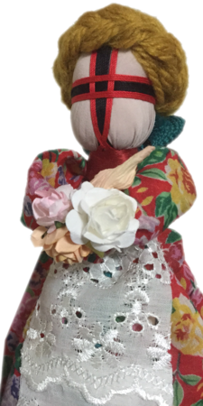

Писанка
Пи́санка — яйце, декороване традиційними символами, які намальовані за допомогою воску й барвників. Писанка — символ Сонця; життя, його безсмертя; любові і краси; весняного відродження; добра, щастя, радості. (Вікіпедія)

Pysanka
A pysanka (Ukrainian: писанка, plural: pysanky) is a Ukrainian Easter egg, decorated with traditional Ukrainian folk designs using a wax-resist (batik) method. The word pysanka comes from the verb pysaty, "to write", as the designs are not painted on, but written with beeswax. (Wikipedia)

Мотанка
На думку дослідників, мотанки не ігрові ляльки. Вони були пов'язані з обрядом плодючості й продовження роду. Кукла-мотанка, ймовірно, використовувалась в аграрному культі. Використовувалась у ритуалах, присвячених майбутньому врожаю. Очевидний зв'язок мотанки з весільним обрядом. Неодружені дівчата, майструючи ляльки, співали, як правило, весільні пісні.
プィーサンカ
プィーサンカ（ウクライナ語：Писанка）は、ウクライナの特産品、蝋結染め（バティック）技術によって装飾された卵である。古代ウクライナの迎春祭の象徴物であったが、11世紀以後キリスト教の復活祭に用いるイースター・エッグとなった。古代スラヴ人の文化の影響を受けたウクライナの隣国にも用いられる （ウィキペディア）

Символіка писанки
Дослідники вважають, що українська писанка має понад 100 символічних малюнків. Наприклад, кривулька знаменувала нитку життя, вічність сонячного руху. Кривулька або безконечник — це символ початку і кінця. Тригвер або триніг символізував, на думку одних, небо, землю і повітря, на думку інших — повітря, вогонь і воду, треті вважали його символом життя людини. Четверті трактували його як символ неба, землі і пекла. Символічне навантаження мала і кольорова гама писанки. Червоний колір усимволізовував радість життя, любов, жовтий — місяць і зорі, урожай; зелений — багатство, буяння рослинного світу, його воскресіння; блакитний — чисте небо, здоров'я; бронзовий — матінку-землю; чорний з білим — пошану до померлих родичів, їхніх душ та ін. (Вікіпедія)

分類
ウクライナにおいて、蝋結染め技術で装飾された卵のすべては「プィーサンカ」と呼ばれる。地方によって蝋結染め技術の多少の差異が見られ、その差異に応じて名称も異なることもある。 (クラーシャンカ, プィーサンカ, クラーパンカ, リャーパンカ, マリョーヴァンカ, ルィストーヴァンカ)。（ウィキペディア）


Перший Передріздвяний писанковий клас, 2015
Шановні друзі!
Запрошуємо всіх на передріздвяні писанкові класи. На наших уроках Ви зможете навчитись виготовляти писанкові новорічно-різдвяні прикраси, також обереги для родини та друзів. Чекаємо вас на першому з трьох передноворічних уроків 31 жовтня.
Записатись на класи можна заповнивши кототку веб-форму на сторінці реєстрації, на сторінці у Фейсбуку, або безпосередньо за телефонами вказаними на сторінці.
- 2 F, 30-2 Sakuragaokachō, Shibuya-ku, Tōkyō-to
- 31 жовтня 2015, Сб, З 13:30 до 16:30
- 3000 йєн
Наш проект орієнтується перш за все на японську аудиторію, українських майстрів та майстринь, що проживають у Японії, українців у Японії.
Ми починаємо проект з розділу писанок та писанкарства. З часом проект буде наповнюватися та поповнюватися іншими матеріалами та розділами, включаючи, але не обмежуючися, розділами про ляльки-мотанки, петриківський живопис, рецепти та майстер класи української кухні, образотворчого мистецтва. тощо.
Майданчик проекту http://maister.co ведеться трьома мовами — українською, японською та англійською. Більшість матеріалів будуть перекладатися всіма трьома.
Проект ведеться на засадах програмного забезпечення з відкритими кодами. Ми запрошуємо до участі в проекті як розробників, дизайнерів і перекладачів, так і українських майстринь та майстрів з усіх напрямків українських ремесел.